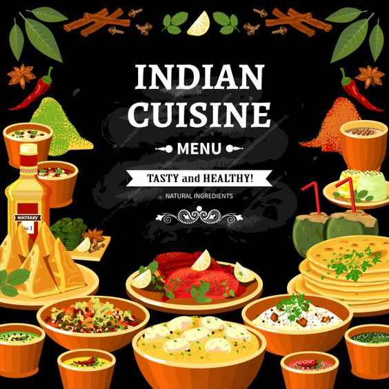

Food brings people together on many different levels. It's the nourishment of the soul and body, it's truly love.
Puran poli is an Indian sweet flatbread that is popular in South India and the state of Maharashtra.
It is also known as puran puri, holige, obbattu, bobbatlu, poley, bakshamulu, and boli.
Masala Dosa is one of the most popular South Indian breakfast dishes served in restaurants and tiffin,
centres. Dosa is a crepe made using fermented rice and lentil batter.Masala Dosa is one that is crisp, aromatic,
flavourful and has a potato masala or spiced seasoned potatoes stuffed in it.
Pav bhaji is a spiced mixture of mashed vegetables in a thick gravy served with bread. Vegetables in the curry may
commonly include potatoes, onions, carrots, chillies, peas, bell peppers and tomatoes. Street sellers usually cook
the curry on a flat griddle (tava) and serve the dish hot.
The paratha is an important part of a traditional breakfast from the Indian subcontinent. Traditionally, it is made
using ghee but oil is also used. Some people may even bake it in the oven for health reasons.
Khaman is a savoury snack from India that found fame in Gujarat. Khaman is made from ground channa daal or channa gram
flour, usually with lemon juice, semolina, and curd. A final tadka can be added, using ingredients such as asafoetida
and chillies.